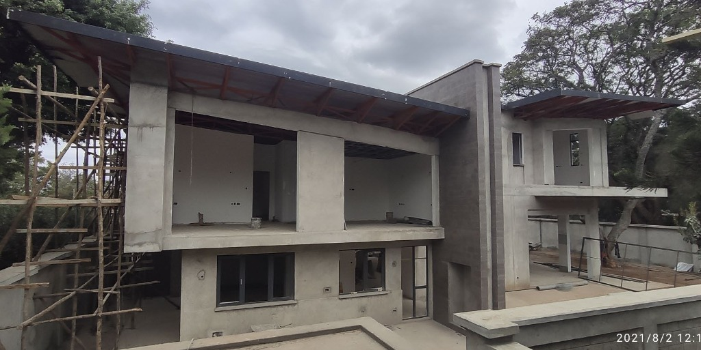
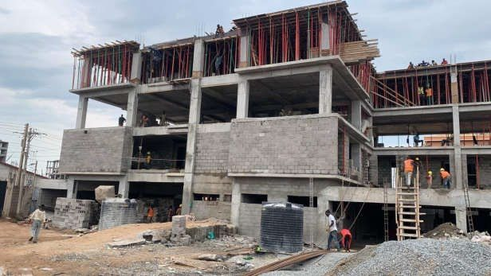
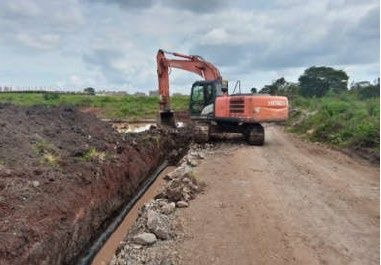

Forensic Engineering & Failure Analysis
What Is Forensic Engineering? A Practical Guide for Kenya
Forensic engineering is a specialised discipline used to investigate structural failures, determine liability, and guide remedial action. Learn when you need it and what the process involves.
 Forensic Engineering
Forensic Engineering
Building Collapse Investigation: What Happens After a Failure?
From the first site visit to the final forensic report — a step-by-step walkthrough of how structural engineers investigate a collapse, what evidence is collected, and how findings are used.
 Forensic Engineering
Forensic Engineering
Root Cause Analysis of Structural Failures: Methodology & Examples
Not all building failures are visible cracks. This guide explains how engineers systematically trace failures back to their origin — design flaws, construction errors, material defects, or misuse.
Structural Audits & Inspections
 Structural Audits
Structural Audits
Structural Audit in Kenya: What It Involves and Why It Matters
Government bodies and responsible property owners are increasingly commissioning structural audits. This ultimate guide explains the process, what engineers look for, and what the report contains.
Building Safety Audit Kenya: The Complete Checklist
A practical walkthrough of every item a structural engineer checks during a building safety audit — from foundations and columns to roof connections and drainage systems.
 Structural Audits
Structural Audits
How Much Does a Structural Engineer Cost in Kenya?
A transparent breakdown of structural engineering fees in Kenya — from audit and assessment costs to full design commissions — based on the EBK scale of fees and current market rates.
Structural Assessment vs. Structural Audit: What's the Difference?
The terms are often used interchangeably — but they mean different things. This explainer clarifies what each engagement entails and when to commission one over the other.
NDT & Concrete Testing

NDT & TestingNon-Destructive Testing (NDT) for Buildings in Kenya: A Complete Guide
NDT lets engineers assess structural integrity without damaging the building. This guide covers the six main methods — and explains which one is right for your situation.
 NDT & Testing
NDT & Testing
Ferroscan Testing: How It Works and When You Need It
Ferroscan uses electromagnetic impulses to locate reinforcement bars inside concrete without drilling. Here's how Oville's Ferroscan detects rebar size, spacing, and cover depth — all non-invasively.

NDT & TestingSchmidt Hammer Testing: Measuring Concrete Strength On-Site
The Schmidt rebound hammer is the fastest way to estimate concrete compressive strength in an existing structure. Learn how it works, what affects accuracy, and how to read the results.

NDT & TestingConcrete Testing in Nairobi: Cube Testing and What the Results Mean
Cube testing is a standard quality-control requirement on any construction site. This guide explains the process, acceptable strength thresholds, and what to do when results fail.
High-Rise & Structural Design
 High-Rise Design
High-Rise Design
High-Rise Structural Design in Nairobi: Challenges and Solutions
Designing a 10+ storey building in Nairobi means navigating expansive soils, seismic zones, and a rapidly evolving planning environment. Lessons from Oville's high-rise portfolio.
 High-Rise Design
High-Rise Design
Seismic Design for Buildings in Kenya: What Engineers Need to Know
Kenya sits within an active rift zone — yet seismic considerations are frequently overlooked in building design. This guide explains what the Kenya Building Code requires and how to design for it.
 High-Rise Design
High-Rise Design
Structural Design for Steep Terrain: Lessons from Nairobi Developments
Nairobi's hillside suburbs present unique structural challenges. Drawing on projects like the Kitusuru Town Houses, this article covers slope stability, retaining walls, and foundation strategy.
Regulations & Professional Standards
Kenya Building Codes Explained: What Developers and Owners Need to Know
A plain-language guide to the Kenya Building Code — covering structural loads, material standards, inspection requirements, and what happens when buildings don't comply.
 Regulations
Regulations
Engineers Board of Kenya (EBK): Registration and Why It Matters
Why you should only hire EBK-registered engineers — and what the registration process requires. An overview of professional obligations under the Engineers Act.
No articles in this category yet
Check back soon — new articles are published regularly.
Have a structural challenge?
Whether you need a forensic investigation, structural audit, or NDT assessment — our team is ready to help.
Get in Touch